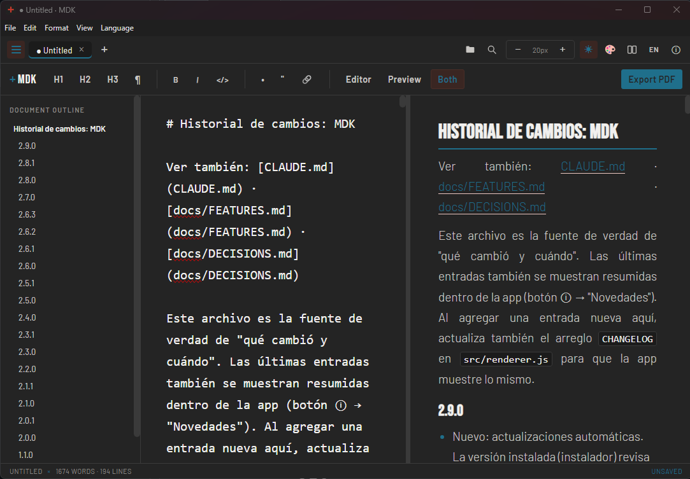
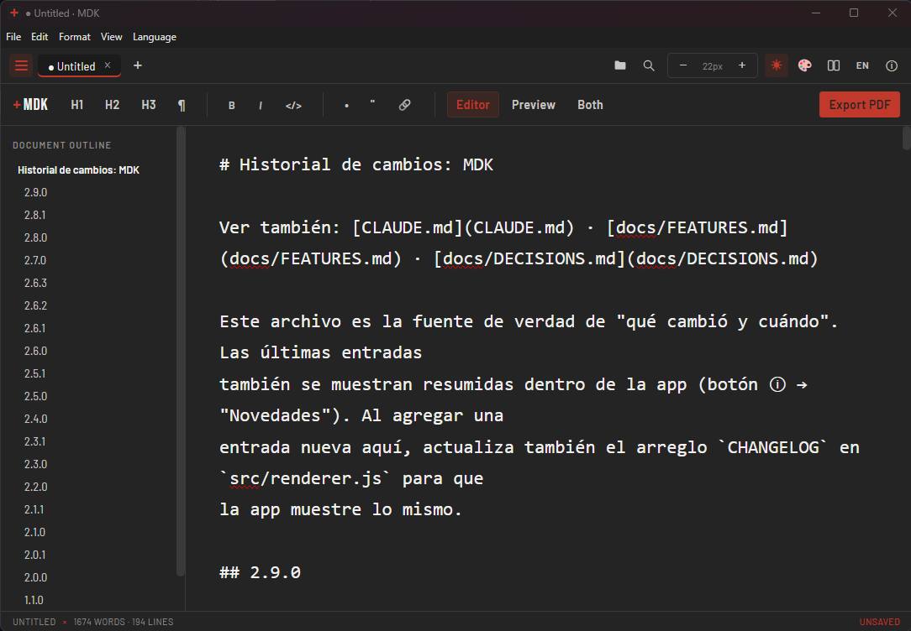

Gratis, sin publicidad, sin cuenta y de código abierto. Vista previa en vivo, comparación de documentos, exportación a PDF y una interfaz que puedes vestir a tu gusto.Free, no ads, no account, open source. Live preview, document comparison, PDF export and an interface you can skin to taste.

Filtra por lo que quieres hacer. Pasa el cursor sobre una tarjeta para ver el detalle.Filter by what you want to do. Hover a card for details.

Casi todos los editores de Markdown esconden el formato básico tras publicidad o un plan de pago. MDK no.Most Markdown editors bury basic formatting behind ads or a paid plan. MDK doesn't.
Abre rápido, sin cuenta ni nube. Tus archivos son tuyos, en tu disco.Opens fast, no account, no cloud. Your files stay yours, on your disk.
Comparar versiones, tablas, índice y PDF con estilo: lo que pide un documento serio.Version comparison, tables, outline and styled PDF: what a serious document needs.
Licencia MIT. Úsalo, cópialo, modifícalo, incluso comercialmente.MIT license. Use it, copy it, modify it, even commercially.
winget install earubioc.MDK
La forma más rápida. Se actualiza con winget upgrade.The fastest way. Update with winget upgrade.
Con accesos directos, asociación de archivos .md y actualizaciones automáticas.With shortcuts, .md file association and automatic updates.
Se ejecuta directo, sin instalar nada. Ideal para llevar en una USB.Runs directly, nothing to install. Great for a USB stick.
Windows 10 u 11, 64 bits.Windows 10 or 11, 64-bit.
Sin registro, sin tarjeta, sin letra pequeña.No sign-up, no card, no fine print.